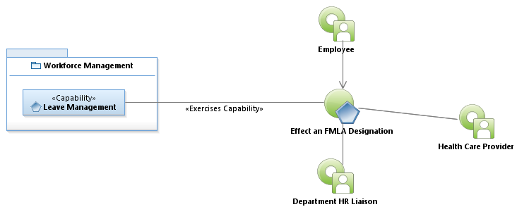
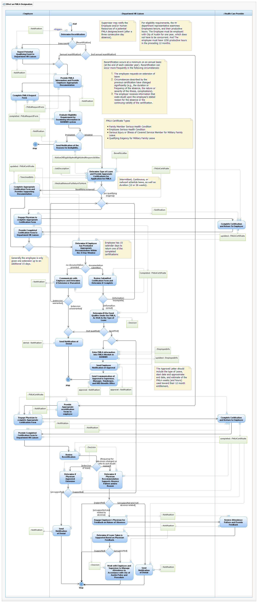

Use Case Model: Effect An FMLA Designation
Architect: Aaron Brown, IT Enterprise Architect Senior
Date Last Modified: 03/19/2013
User Review: Shelly Sheppard, Linda Escamilla, Sharon Huckabee
Date: 03/19/2013
Department shall grant job protected unpaid leave to the employee for specific qualifying events as defined by the Family Medical leave act (FMLA). Examples of this would be: Medical Leave (employee/family member), family leave(birth /adoption/foster) Leave, Military Qualifying Exigency Leave, Covered Service Member Leave.
Follow link to Role Definitions

Use Case Model: Effect An FMLA Designation

Activity Model: Effect An FMLA Designation
Activity Documentation
| Activity | Documentation |
|---|---|
| Evaluate Eligibility Requirement by Examining information in BANNER system | Examine Employees tenure, and their productive hours. They must be employed with City of Austin for one year, which does not have to be concurrent. And they must have 1250 productive hours in the preceding 12 months. |
Note: When the activity is self explanatory no documentation is provided.